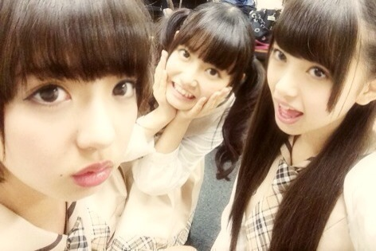
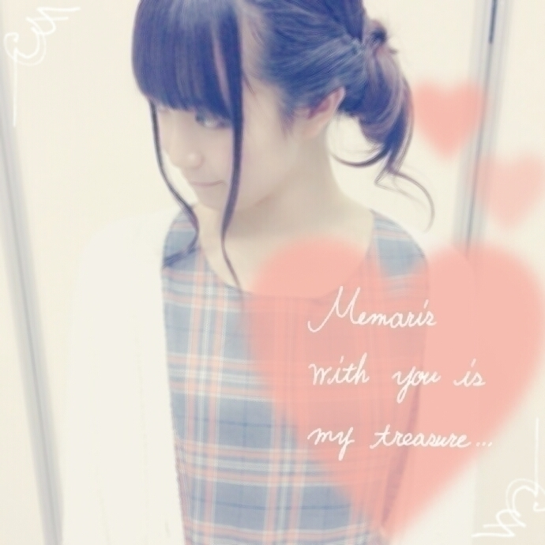

| 2014/11 07 Fri | ひめたん-OoO-その496 |

アンダーライブ初日の写メ
もうすぐ一ヶ月か............はやいなあ
次回の乃木ののに
登場します！
あすかりん まあや ひめたん

一年前の画像(゜ω゜)ごめんぬ
それから、いま乃木のので
ふたりトークのペアを募集してるよ～
なんか喋ってほしいふたりが
思い付いたら
乃木ののさんにメールしてね☆
ねえねえ
きゅんきゅん王国のみなさんは
ひめたんと誰のぺあが好き？
格差社会コンビ(あすかりん)
なかいさん(まりか)
そんバカコンビ(川後さん)とか
らりんお姉さんとの姉妹とか
かなりんとのぺろぺろとか
握手会とかでファンのみなさんに
よく言われるのは
さゆひめ、まなひめ、とかかなあ
そしておとといは
Kiyora EGG Bar Standの
イベントに参加してきました！
明日から渋谷PARCOスペイン坂広場に
登場するそうなのでぜひ！
美味しかったです(＊´ω`＊)♡

きよらユニフォームかわいい♡
あ、そうそう
この前の2部のヘアが
絶対伝わってないと思って(笑)
これ！

実はこれ握手会終わって撮ったから
若干崩れてるんだけど
まとめるやつ。これです。
これをやるとお姉さんに見えるそう
メンバーから結構好評だったよ～
あと日記でいい損ねたけど
2部は白のモコモコカーディガンを着て
握手したよ( ^o^ )
ちょっと代わり映えしたほうが
いいなかと思って着たらみんなに
「寒くなった？」って聞かれた♡
有明コロシアムは
3dayじゃなくて3daysだよね～
タイトルも間違えてたみたいで
ほんとにごめんね～( >_< )
めーるもなんか
まったくおんなじことを
ふつか連続で報告したりとかして
私どうしたの疲れてる？笑

 今年ももう終わりに近づいていますが、
今年ももう終わりに近づいていますが、
何かひめたんやり残したことはない？
あ！サンリオピューロランド！
よく握手会の時に言ってる
ひめたんTシャツってなに？
そうだね、説明不足でごめんなさい。
オフィシャルTシャツや
B.L.TさんとのコラボTシャツとして
メンバーがデザインしたことがあったの＊
それで、ひめたんがデザインしたやつを
ひめたんTシャツって呼んでます( ^o^ )
広島では乃木坂ちゃんに合えないので。。
ぜひ応援メッセージいただけませんか？？
いつか広島でライブしたい！
今は広島の人たちには遠征してもらうか
PCの中で会うのがほとんどかもだけど
直接みなさんに「ただいま」言いたい❁
ひめたんは女の子の髪型何が好きー？
まあツインは好きなんだけど
編み込みまきまきとか。
お人形さんみたいだよね＊＊
そういえば時々聞かれるんだけど
クールなおにゃのこや
ナチュラルなおにゃのこも
もちろん好きだよ(＊＾ω＾＊)らぶ
ひめたんはコンビニスイーツで
何か好きなものはありますか？
なんだろう～コンビニスイーツ
コンビニは季節ものに敏感だよね♪
ドライフルーツもよく買うよ～
スペシャル個別握手会
ひめたんに会う 話す 笑う
それだけで特別なんだからね～
わあ( ´•̥ω•̥` )
ひめたんの日記の
コメント欄下２ケタに46を踏んだ方へ
手書きでコメ返するコーナー
＼ ひめたん46 ／

いつもたくさんのコメント
ありがとうございます
最近コメントいっぱい\( ˆoˆ )/
なんでだろー？
みんなひめたんのこと最近気になる？♡
500まであと少し！
年内には達成できそうやんな～
めーる1000件もな～
企画たくさん考えてくれてありがとう
じっくり検討します\❁/
(＊´・ω・＊)
コメント(881)
2014/11/07 23:36